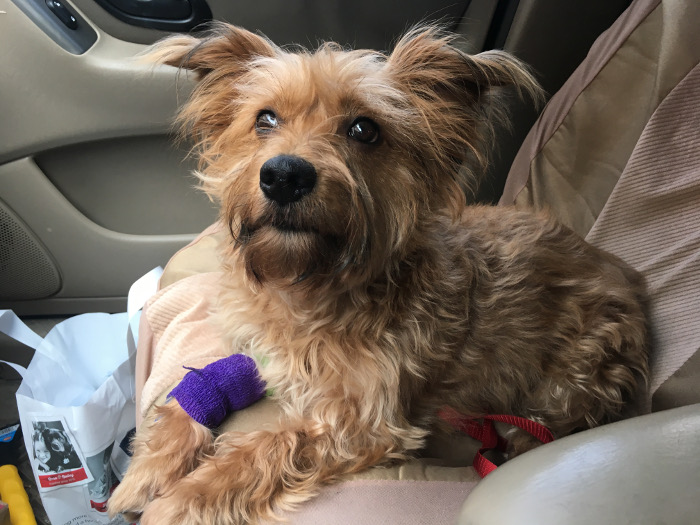
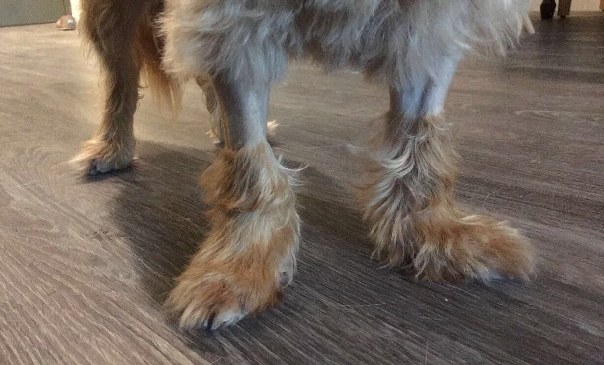

Did you know that a Vitamin D overdose in dogs is the same type of poisoning as ingesting rat poison? Me neither, until a couple weeks ago. I was packing for a weekend away visiting family over Easter while also getting ready for bed. I stepped out of the shower and into my bedroom to find that my bottle of Magnesium vitamins had been taken out of my suitcase and was now on my bedroom floor. I figured my dog, Daisy, was snooping around and I looked to make sure everything else was still there. Sometimes Daisy carries around random objects in my apartment for attention, usually socks, and I figured she was doing this with random items from my suitcase. I couldn’t find my bottle of Vitamin D pills anywhere and looked all over my apartment, becoming more and more worried as the minutes passed by and it was nowhere to be seen. Daisy was hunkered down in her crate for the night, and when I made her get out so I could check her bedding, I found the chewed up bottle underneath her.
I made it to the emergency vet 20 minutes later and they immediately took her to the back to make her vomit. I could hear them discussing how quickly the soft gels dissolved in water and got extremely worried. After authorizing a bunch of tests and waiting around for an hour, they told me her blood chemistry levels weren’t in the danger zone (yet) and they would keep her on an IV all night. However, with vitamin D poisoning, the levels can take days to rise to dangerous levels, so she needed extensive monitoring for the next several days.
The next 2 days were pretty awful. I had to wake up at 5:30 a.m. to pick her up from the emergency vet and transfer her to my regular vet, where all day long they fed her charcoal and kept her on the IV to flush out her system. Then after work I had to transfer her back to the emergency vet for overnight monitoring and fluids. Finally on Friday I took her home and she was so happy to be back. During the weekend she had some extremely bad BMs (I’ll spare you the details), but luckily it seems to have been caused by stress or a virus as her pancreas levels are normal. Sunday was her last blood chemistry test and she’s in the clear!
Still looking fabulous as ever, in in sad shape
I’m not sure why I decided to write about this, maybe as a cautionary tale not to keep your vitamins within reach of your dog (in Daisy’s case, this means nowhere within 4 feet of the floor), and also to have enough savings for accidents like this, if possible. Overall I ended up spending about $1000 in vet bills this week. This was only our most recent emergency, but I’ve had bad luck with Daisy this past 1.5 years I’ve had her, and it seems like every 6 months I’m taking her to the vet for something dramatic.
Heart Worms
I wrote about this here. When I first got Daisy she was heart worm positive, which was a huge expensive ordeal that she could’ve died from. It was also disheartening as I was so excited to finally have a dog of my own, and our first 4 months together were spent with her on crate rest.
Spay Surgery
I was told that Daisy was spayed when I got her, and the vet couldn’t tell for sure without opening her up. 6 months later - surprise! She escaped the dog park while in heat (I was oblivious to the signs). While she was in heat she was the most annoying pet ever, begging to go outside every 10 minutes and humping me every time we made eye contact, and a few weeks later I was able to get her spayed, which was another couple weeks of recovery time (and another vet bill).
Broken Tooth
This one’s my fault and I still feel guilty about it. I used to let her chew on a deer antler, and (I think?) because of this, her tooth broke. It was broken so badly that it was sticking into her gums 1 centimeter. She didn’t show any signs of pain so I don’t know how long it was broken before I noticed something was weird about her tooth. It was so painful for her that she even flinched under anesthesia when they poked the tooth. She had to have 2 procedures done - first a general dental cleaning and then a week later she had the tooth extracted. Because of this, both her forearms were shaved for the IV drips, and it looked like I had intentionally shaved her legs to look like Ugg boots!

Cancer Scare
4 months after Daisy had her vaccines updated this past fall, I noticed a lump on her shoulder that wasn’t going away. I took it in to get looked at, and the vet told me it could be cancerous and under the microscope it looked like round cell cancer. This led me to be really anxious for 2 days until the lab results came back and said it wasn’t cancer and was just inflammation from the vaccine.
Fingers crossed we don’t have another emergency for quite some time! I think it’s safe to say I can blame any future gray hairs on this dog.
Questions? Comments? Don't hesitate to contact me!